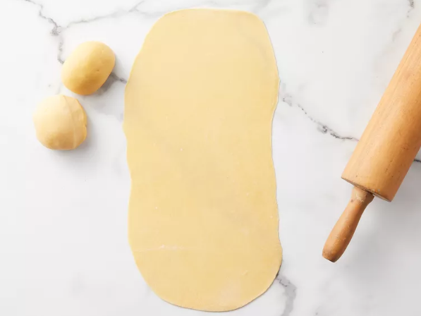
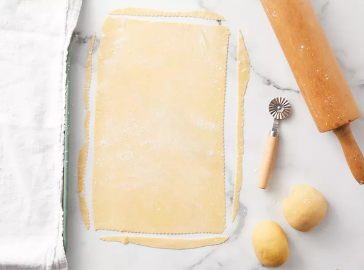

This recipe will help you make the sheets necessary for a great lasagna recipe!
Place flour on a marble or wooden work surface. Make a well in the center and crack in eggs; add salt.
Use your hands to flatten, stretch and fold the top towards the center.
Turn 45 degrees and repeat until dough is soft and smooth, should take about 10 minutes.
Shape dough in a ball. Place in a bowl and cover with palstic wrap. Refrigerate until firm, 30-60 min.
Dive and flatten into 3 equal portions. Take one piece and flatten it a bit with your hands. Dust a work surface
with flower and roll dough out using a rolling pin 5 to 6 times. Turn dough 45 degrees and roll out again, 5 to 6 times.
Keep rolling and turning it the same way until dough is evenly very thin. When you hold up the dough, you should be able to see your
fingers through it.
Cut pasta dough into rectangular sheets to fit you baking dish using a pastry wheel or a knife.
Transfer lasagna sheets to a floured kitchen towel and let air-dry for about 30 min before assembling.
